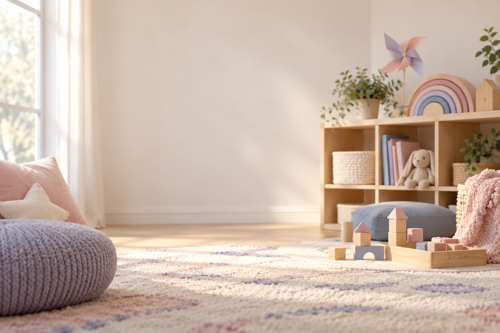
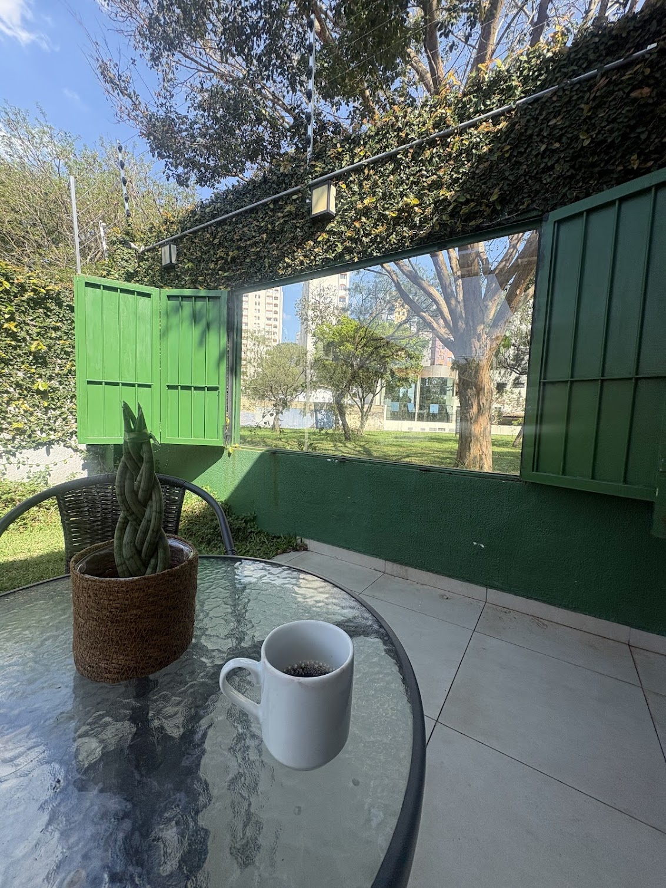

Psicoterapia infantil
Um espaço em que a criança pode expressar o que sente e vive por meio da conversa, de brincadeiras e de recursos adequados à sua idade. O acompanhamento ajuda a compreender suas experiências e necessidades.

Psicóloga Infantil - São José dos Campos
Sou Érika Sales Vieira, psicóloga infantil em São José dos Campos. Acompanho crianças e famílias com psicoterapia, ABA e orientação parental, respeitando o ritmo de cada criança.
Um espaço de cuidado para a criança e para quem caminha com ela.
Sobre mim
Meu trabalho começa pela escuta da família e, em seguida, da criança. Procuro compreender o contexto, as necessidades e as potencialidades de cada história, construindo um acompanhamento cuidadoso e adequado a cada momento.
Sou psicóloga infantil, com formação em Análise do Comportamento Aplicada a transtornos do desenvolvimento e do espectro autista, e em Acompanhamento Terapêutico de Autistas. Atuo com psicoterapia infantil, acompanhamento terapêutico, orientação parental e Análise do Comportamento Aplicada.
Psicóloga Infantil · CRP 06/216276
Atendimento em São José dos Campos (SP).
Como posso ajudar
As modalidades são conversadas com a família e definidas de acordo com as necessidades e os objetivos do acompanhamento.
Um espaço em que a criança pode expressar o que sente e vive por meio da conversa, de brincadeiras e de recursos adequados à sua idade. O acompanhamento ajuda a compreender suas experiências e necessidades.
Conversas com mães, pais e responsáveis para pensar estratégias e fortalecer recursos da família no cuidado cotidiano.
Apoio em ambientes e situações do dia a dia, favorecendo participação, autonomia e generalização de habilidades, conforme o plano combinado.
A Análise do Comportamento Aplicada observa como o contexto influencia comportamentos e habilidades. A partir dessa compreensão, são definidos objetivos individualizados para apoiar novas aprendizagens e a participação da criança no cotidiano.
Como funciona
As etapas podem variar conforme a necessidade da criança e da família.
Você me conta brevemente o que motivou a busca e esclarecemos dúvidas iniciais sobre o atendimento.
É uma conversa inicial com os responsáveis para conhecer a história da criança, seu desenvolvimento, a rotina e as questões que motivaram a busca. Esse momento ajuda a compreender o contexto familiar e a planejar os próximos passos.
Com as informações reunidas, realizo uma avaliação para compreender as necessidades da criança e traçar metas e objetivos para o acompanhamento.
Em seguida, iniciamos as intervenções planejadas e acompanhamos o processo junto à família.
Atendimento
Onde atendo
Atendimento presencial.
Local de atendimento no Jardim Esplanada, São José dos Campos.
.jpg)

Dúvidas frequentes
Se ainda tiver dúvidas, podemos conversar com calma no primeiro contato.
Quando algo no cotidiano, nas emoções, no comportamento ou nas relações preocupa você, conversar com uma psicóloga pode ajudar a compreender o que está acontecendo. A avaliação é feita caso a caso, sem necessidade de chegar com uma resposta pronta.
São formas de trabalho com objetivos e métodos diferentes, que podem ser indicadas conforme a avaliação e as necessidades da criança. ABA (Applied Behavior Analysis) observa relações entre comportamento e contexto para apoiar o desenvolvimento de habilidades; a psicoterapia oferece um espaço de cuidado e expressão emocional. A indicação é individualizada.
Sim. A participação dos responsáveis é importante para compreender o contexto da criança e alinhar o acompanhamento. A forma e a frequência das conversas são combinadas conforme cada caso, preservando o espaço terapêutico da criança.
Atendo crianças a partir de 2 anos. Entre em contato para conversarmos sobre a idade e a necessidade da sua família.
Não. Os atendimentos são exclusivamente presenciais em São José dos Campos.
Você pode me chamar pelo WhatsApp para compartilhar, de forma breve, o que está buscando. Vou explicar como funciona o atendimento e combinar os próximos passos, respeitando o sigilo profissional.
Quando há autorização dos responsáveis e isso é pertinente ao cuidado, posso dialogar com outros profissionais da rede da criança, respeitando o sigilo e os limites éticos da profissão.
No Instagram
Veja algumas publicações de @psi.erikasales. Selecione uma capa para abrir o conteúdo no Instagram.
Vamos conversar
Se você está buscando acompanhamento para seu filho, entre em contato para conhecer melhor o trabalho e tirar suas dúvidas.